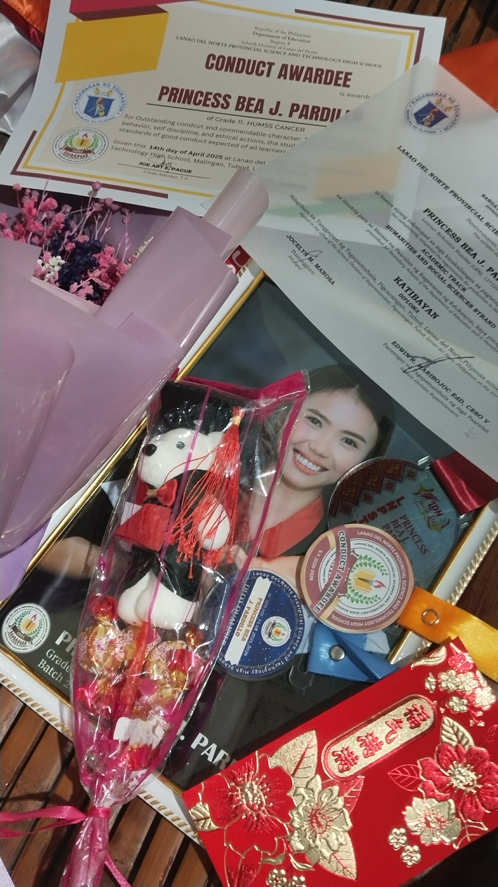
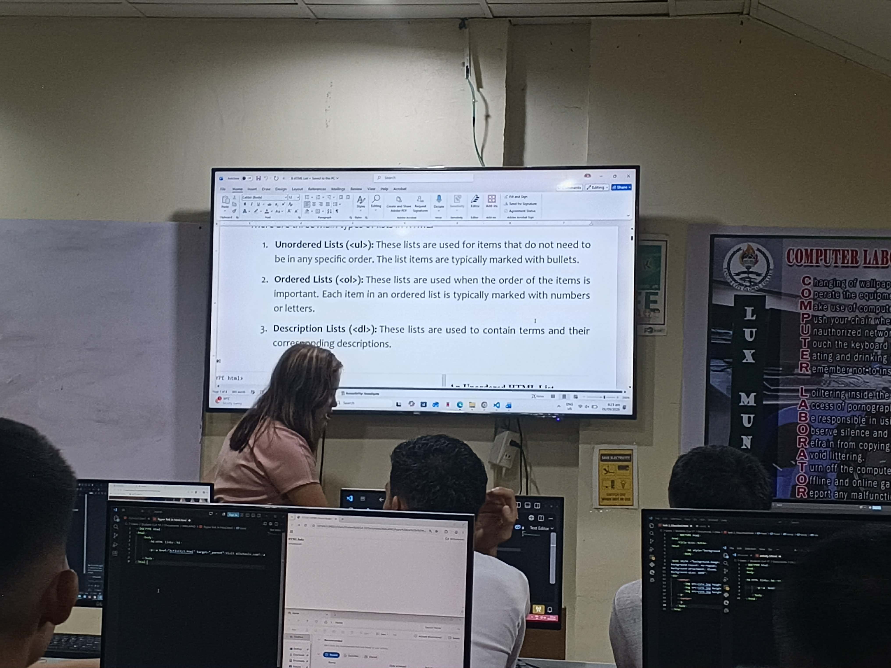
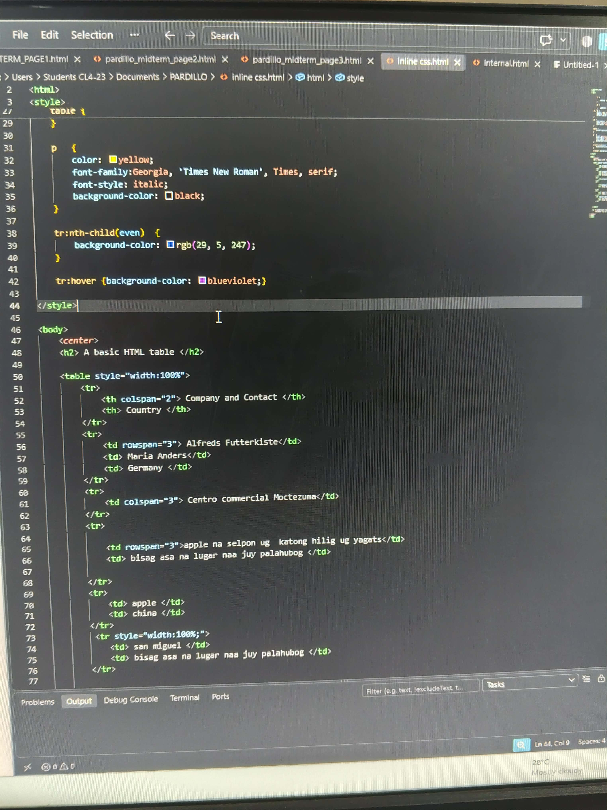
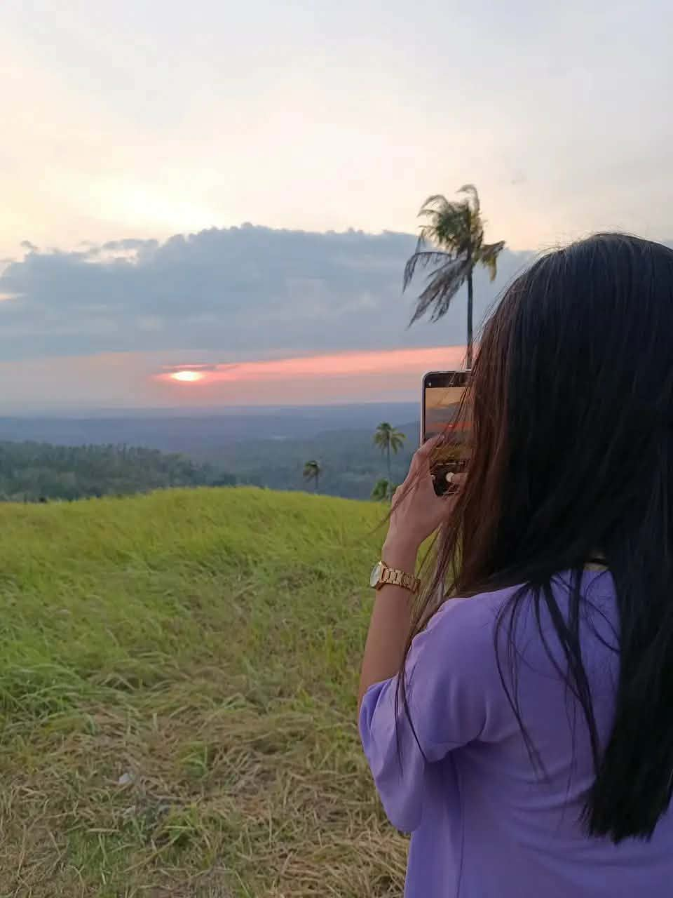
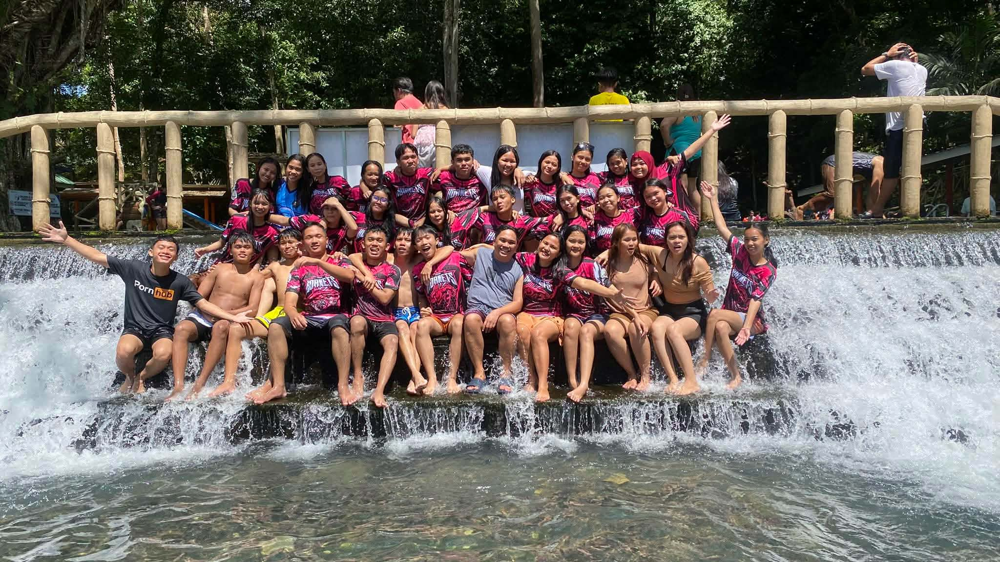
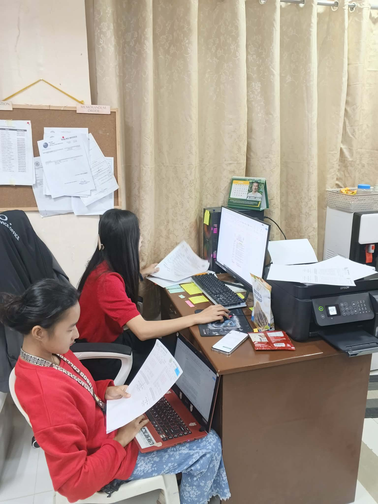

1. My Achievements
Every achievement I have received is a reminder of the hard work, dedication,
and effort I have given throughout my senior high school journey. One of the
achievements I am proud of is receiving a Conduct Award, along with other
recognitions and certificates.
These awards are not just pieces of paper or medals; they represent the lessons,
challenges, and experiences that helped me become a better student and person.
They remind me to continue being responsible, respectful, and committed to my goals.
As I move forward to college, I will always treasure these achievements because they
inspire me to work harder, keep improving, and aim for greater things in the future.

2. My Learning Journey
My journey as a college student is a new chapter filled with learning experiences and challenges. Being a BS Computer Science student allows me to explore technology, understand programming, and develop new skills.
There are times when lessons feel difficult, but I know that learning takes patience and practice. Every activity and project gives me a chance to become better.

3. My Skills
I believe that skills are developed through continuous learning and experience. As a student, I am still improving my abilities and discovering what I can do.
Some of the skills I am developing:
- Basic programming and problem-solving
- HTML and CSS fundamentals
- Communication and teamwork
- Creativity and critical thinking
- Time management and responsibility

4. My Dreams and Goals
I dream of becoming successful in the field of technology and building a future that I can be proud of. I want to finish my studies, improve my knowledge, and become a skilled and responsible computer science professional.
My Goals:
- Successfully finish my college education.
- Improve my programming and technical skills.
- Gain more knowledge and practical experience.
- Make my family proud through my efforts.
- Use my skills to create something meaningful.

5. Memorable Moments
Some moments become special because of the people,
experiences, and lessons connected to them. These
memories remind me of how far I have come and how much
I have grown.
Our Last Celebration as a Grade 12 Family
One of the most unforgettable moments of my senior high school
journey was our last celebration together as a Grade 12 family.
It was a special moment filled with happiness, laughter, and memories
that I will always treasure.
As we celebrated together, I realized that our time as classmates was slowly
coming to an end. We may have different paths to take after graduation, but the
memories, friendship, and experiences we shared will always remain in my heart.
It was more than just a celebration, it was a reminder of the people who became part of my
journey. I am grateful for every moment we shared, and I will always look back on those days
with a smile. One last celebration, countless memories. Forever grateful for my Grade 12 family:>

6. My Summer Job Experience
"One of the meaningful experiences in my journey was being part of the Special Program
for Employment of Students (SPES). Through this opportunity, I experienced working,
handling responsibilities, and learning how to communicate with different people.
It taught me the importance of patience, discipline, teamwork, and hard work.
I also learned that earning through my own efforts gives me a sense of responsibility
and independence.
This experience became one of the steps that helped me grow, not only as a student but also as
a person preparing for my future career."